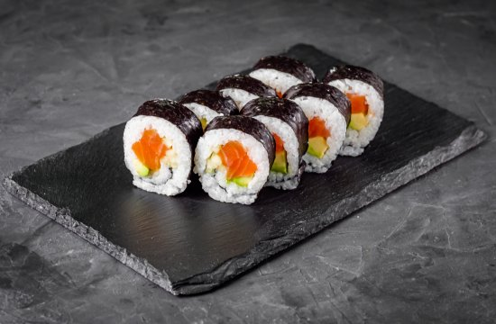
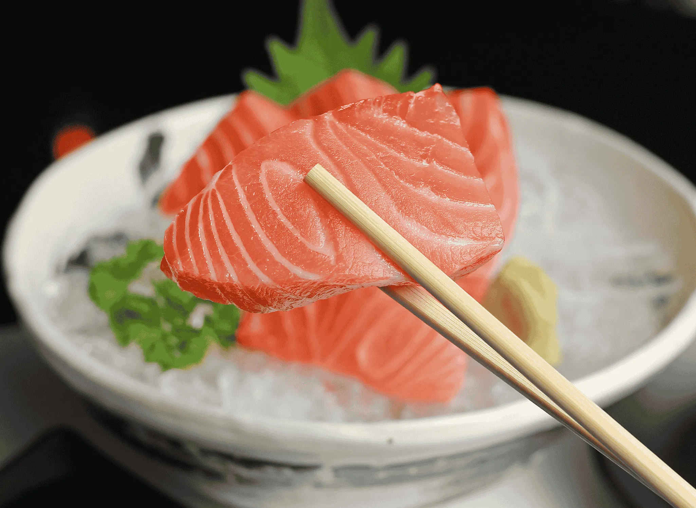
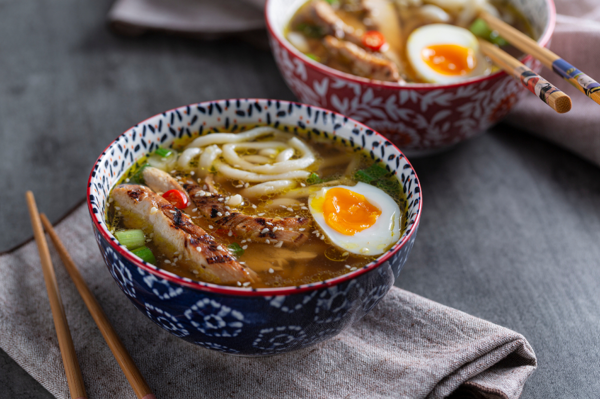
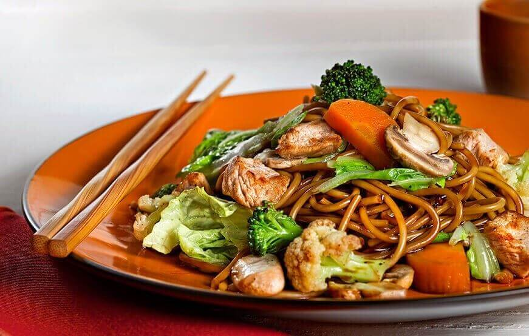

Culinaria Japonesa
A culinária japonesa é muito famosa pela variedade de pratos e pelo uso de ingredientes frescos. Alguns dos alimentos mais conhecidos são sushi, sashimi, ramen e yakisoba. Além de ser saborosa, ela também busca manter um bom equilíbrio entre os ingredientes, fazendo parte da cultura e das tradições do Japão há séculos.
 |
O sushi é um prato japonês feito com arroz temperado com vinagre, geralmente acompanhado de peixe, frutos do mar, vegetais ou outros ingredientes, podendo ser enrolado em alga nori. |
|
O sashimi é um prato tradicional japonês composto por fatias finas de peixe ou frutos do mar crus, servidas sem arroz. Geralmente é acompanhado de molho shoyu, wasabi e gengibre, que ajudam a realçar o sabor. Por destacar a qualidade e o frescor dos ingredientes, o sashimi é considerado um dos pratos mais apreciados da culinária japonesa. |
 |
 |
O ramen é uma das comidas mais populares do Japão. Trata-se de uma sopa de macarrão servida em um caldo quente, que pode ser feito à base de carne, peixe ou missô. O prato costuma ser acompanhado de ingredientes como carne de porco, ovo cozido, cebolinha e algas. Conhecido pelo sabor marcante e pela grande variedade de receitas, o ramen é muito consumido tanto em restaurantes quanto no dia a dia dos japoneses. |
|
O yakisoba é um prato de origem chinesa que se tornou muito popular no Japão. Ele é preparado com macarrão frito na chapa, misturado com legumes, carne, frango ou frutos do mar e temperado com um molho especial de sabor agridoce. Por ser prático, saboroso e bastante versátil, o yakisoba é um dos pratos mais apreciados da culinária japonesa. |
 |